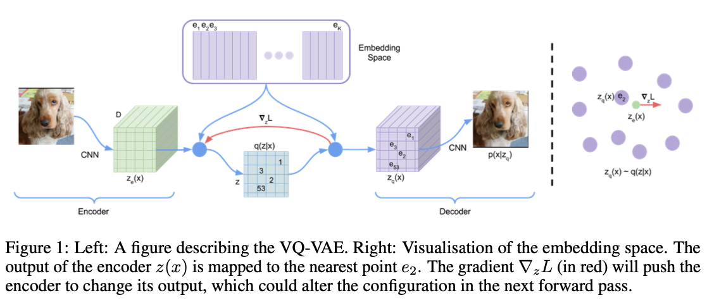
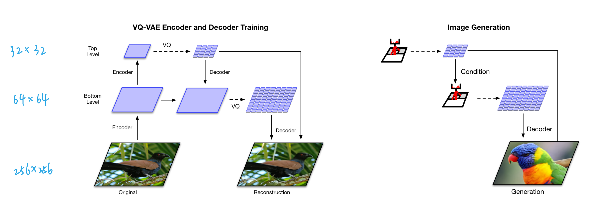
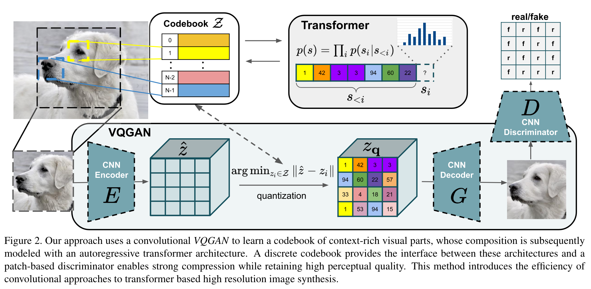
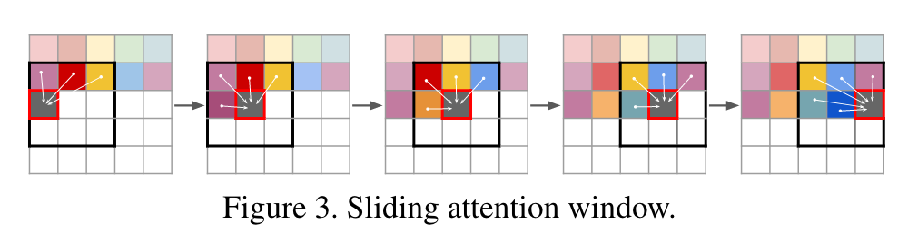
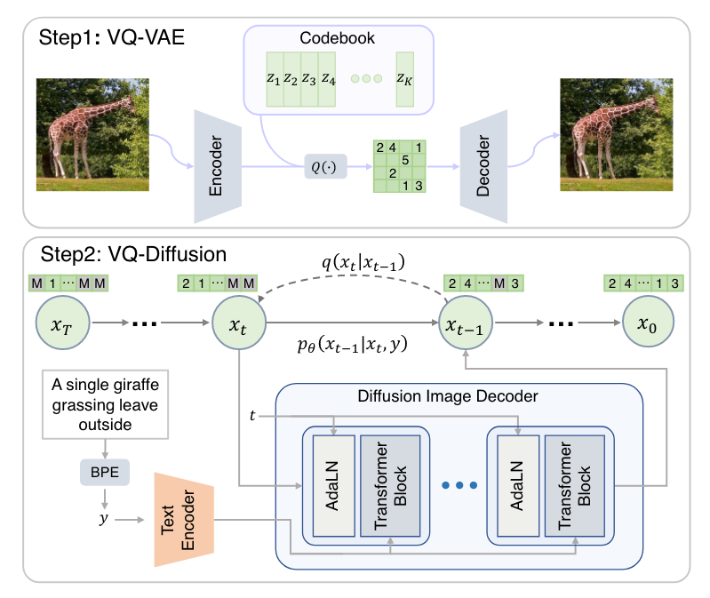
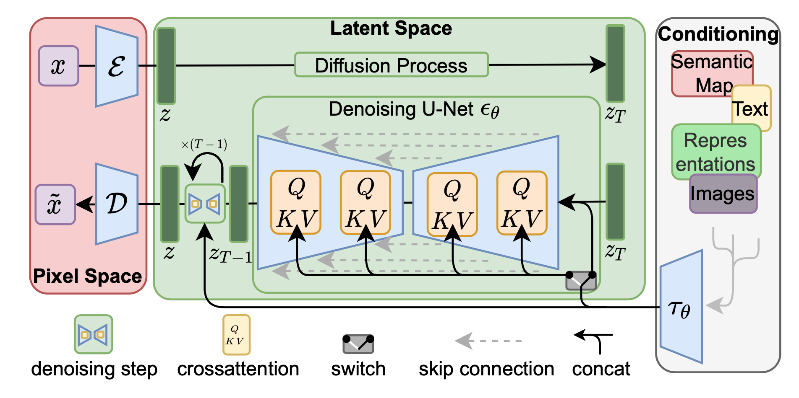

Vector-Quantization
VQ-VAE
VQ-VAE[1] 是 Google DeepMind 在 2017 年提出的一个类 VAE 生成模型，相比普通的 VAE，它有两点不同：
- 隐空间是离散的，通过 VQ (Vector Quantization) 操作实现；
- 先验分布是学习出来的。
为什么要用离散的隐空间呢？首先，离散的表征更符合一些模态的自然属性，比如语言、语音，而图像也能用语言描述；其次，离散表征更适合推理、规划等复杂任务。后来 OpenAI 的 DALL·E 正是使用了 VQ-VAE (discrete VAE)，证明了它强大的能力。
Vector Quantization

神经网络的输出一般是连续值，如何得到离散的表征呢？这就是 VQ (Vector Quantization) 技术。如上图所示，我们设置一个 codebook (embedding space) \(e\in\mathbb R^{K\times D}\)，包含 \(K\) 个 \(D\) 维向量 \(e_1,e_2,\ldots,e_K\). 设编码器的输出为 \(z_e(x)\)，那么在 codebook 里寻找一个与 \(z_e(x)\) 距离最近的向量 \(e_k\) 代替 \(z_e(x)\) 给到解码器，记作 \(z_q(x)\)： \[ z_q(x)=e_k,\quad \text{where } k=\arg\min_j\Vert z_e(x)-e_j\Vert_2 \] 换句话说，VQ-VAE 的后验分布 \(q(z\vert x)\) 是离散的 onehot 类别分布： \[ q(z=k\vert x)=\begin{cases}1&\text{for }k=\arg\min_j\Vert z_e(x)-e_j\Vert_2\\0&\text{otherwise}\end{cases} \] 这里，隐变量 \(z\) 的取值范围为整数索引，相应隐空间为所有索引构成的空间，因此是离散的。
在 VQ-VAE 中，codebook 里的 codes 是可学习的，随着训练过程自适应地调整。所以可学习的参数一共包含编码器、解码器和 codebook 三个部分。如果我们简单地取先验分布 \(p(z)\) 为离散的均匀类别分布，那么一件有趣的事情是 ELBO 中 KL 正则项变成了常数： \[
\begin{align}
\text{KL}(q(z\vert x)\Vert p(z))&=\sum_k q(z=k\vert x)\log \frac{q(z=k\vert x)}{p(z)}\\
&=\sum_k q(z=k\vert x)\log K+\sum_k q(z=k\vert x)\log q(z=k\vert x)\\
&=\log K+0\\
&=\log K
\end{align}
\] 于是 ELBO 只剩下了重构项 \(\log p(x\vert z_q(x))\). 然而重构项并不能训练到 codebook，所以最终的损失函数其实是这样的： \[
\mathcal L=\underbrace{\log p(x\vert z_q(x))}_\text{reconstruction}+\underbrace{\Vert\text{sg}[z_e(x)]-e\Vert_2}_\text{vq}+\underbrace{\beta\Vert z_e(x)-\text{sg}[e]\Vert_2}_\text{commitment}
\] 其中 \(\text{sg}[\bullet]\) 表示 stop gradient，即停止梯度的传播，在 pytorch 中可以用 detach() 操作实现。vq 项（或称作 embedding 项、codebook 项）让 codebook 里的 codes 接近编码器的输出，以此来训练 codebook；commitment 项反过来，让编码器的输出接近对应的 codes，避免输出波动太大在 codes 之间乱跳，影响训练。
至此事情还没完，由于 VQ 操作引入了不可导的 argmin 算子，梯度无法从解码器流向编码器，所以现在编码器根本得不到训练。为此，作者引入了 Straight-Through Estimator——直接把 \(z_q(x)\) 的梯度复制给 \(z_e(x)\)，如上图中红色箭头所示. 毕竟 VQ 是靠查询最近邻实现的，二者实际的梯度应该也相差不大。
关于损失函数的一点理解
初读 VQ-VAE 论文的时候难免会对损失函数的后两项产生疑惑——一个对 \(z_e(x)\) stop gradient，另一个又对 \(e\) stop gradient，这是想干嘛？不要 stop gradient 不就行了吗？我在此分享一下我的理解。
话还得从 VAE 中的 KL 正则项说起。回想一下 KL 正则项的作用是什么——把后验拉向一个预定义的分布，防止 VAE 退化成 AE. 但是现在，由于 \(q(z\vert x)\) 一定是一个 onehot 类别分布，它无论如何也不可能接近一个均匀类别分布，所以 KL 项就失效了。但是 VQ-VAE 的 codebook 是可学习的，只要 codes 最后分布在合理的位置上，那没有这个 KL 项也罢。
我们现在来回答这个问题——为什么 vq 项中要对 \(z_e(x)\) 停止梯度传播？站在「让 codes 分布合理」的角度，可以给出如下解释：随机初始化的 codes 并不一定是合理的，如果不停止梯度，那么它会对 \(z_e(x)\) 产生负面的影响，让训练更加困难。相反，重构本身是一个还不错的寻找隐变量的手段（毕竟 autoencoder 就是这么干的），所以通过重构项来找到比较好的 \(z_e(x)\)，然后只让 \(e\) 去接近 \(z_e(x)\)（而不是反过来），能让 codes 收敛到还不错的分布。
如此说来，commitment 项的存在就有点违背我们的解释了。的确，这一项更多地是经验性的举措，有人实验发现即使 \(\beta=0\) 也没啥问题。
所以，就轻重缓急而言，重构项最重要，它直接决定了 \(z_e(x)\) 和 \(e\) 的分布大体应该如何；vq 项次之，但也不能省，毕竟解码器的输入终究是量化之后的向量，要和重构项打好配合才行；commitment 项最不重要，仅仅是一个稳定训练的经验性手段，不宜占据主导。因此我们应该把 vq 和 commitment 分开写，就变成损失函数里那让人困惑的样子了！
然而，论文称 \(\beta\in[0.1, 2.0]\) 都有差不多的表现，这与我的理解中 commitment 项不宜占据主导又相矛盾了😓。唉，着实玄乎～
VAE 名不副实？
假设我们现在完成了训练，考察用 VQ-VAE 重构输入的过程——\(x\) 经过编码器得到 \(z_e(x)\)，在 codebook 里做最近邻查找得到 \(z_q(x)\)，解码器输出 \(\hat x\) 来重构 \(x\)——整个过程没有一点随机性！VQ-VAE 更像是一个在 bottleneck 处做了量化的 AE，而不是 VAE. 作者将其冠以 VAE 的名号，可能是他们确实是从 VAE 开始思考的吧。
EMA Codebook
上一节我们介绍了，VQ 操作是一个最近邻查找的过程，产生的效果是把编码器输出的特征向量替换为距离它最近的 code，这不就是在做聚类嘛，聚类中心就是 codebook 里面的 codes. 所以我们其实不必使用 vq 项来训练 codebook，而是直接像 K-Means 那样更新聚类中心： \[ e_i=\frac{1}{n_i}\sum_{j=1}^{n_i} z_{i,j} \] 其中 \(z_{i,1},\ldots,z_{i,n_i}\) 是编码器所有输出中被分配给 \(e_i\) 的 \(n_i\) 个特征向量。然而有一个问题，实操中是用 minibatch 训练的，直接用上式并不准确。所以，作者提出用指数平滑来更新 \(e_i\)： \[ \begin{align} &N_i^{(t)}=N_i^{(t-1)}\ast \gamma+n_i^{(t)}(1-\gamma)\\ &m_i^{(t)}=m_i^{(t-1)}\ast \gamma +\sum_{j=1}^{n_i}z_{i,j}^{(t)}(1-\gamma)\\ &e_i^{(t)}=\frac{m_i^{(t)}}{N_i^{(t)}} \end{align} \]
怎么理解？\(m_i^{(t)}\) 可视为 \(t\) 及其以前所有分配给 \(e_i\) 的特征向量之和，\(N_i^{(t)}\) 是特征向量个数和，所以 \(m_i^{(t)}\) 除以 \(N_i^{(t)}\) 就是新的聚类中心。不过这里的「和」都是 EMA 下的「加权和」——因为 codebook 随时间在不断更新，过往的分配关系已经不再准确，需要降低其权重。这与 MoCo 中的 Momentum Encoder 是类似的道理。
虽然论文的主要实验都是用 vq 项来更新 codebook 的，但我复现发现用 K-Means + EMA 的方式更新 codebook 效果更好。事实上，后续的 VQ-VAE-2 和很多其他工作都是用 EMA 方式更新 codebook 的。
Prior Learning
VQ-VAE 训练结束后，我们就可以用它重构输入图像了。但是怎么直接生成新图像呢？
在说明这一点之前，我们必须要对 VQ-VAE 的隐空间有充分的理解。设输入图像 \(x\in\mathbb R^{3\times H\times W}\)，其编码器输出为 \(z_e(x)\in\mathbb R^{c\times h\times w}\)，量化操作的索引矩阵记作 \(\text{index}(x)\in\mathbb N^{h\times w}\). 一个误解是 VQ-VAE 的隐空间是所有 \(\text{index}(x)\) 构成的 \(\mathbb N^{h\times w}\)，但这是错误的！在第一小节中我们说过，隐空间其实是一个个索引构成的 \(\mathbb N\). 这说明，VQ-VAE 并没有对索引矩阵中索引之间的关系进行建模，如果我们直接随机均匀采样 \(h\times w\) 个索引凑在一起组成一张索引矩阵，它大概率并不对应一个自然图像的编码结果，所以也不能生成一个自然图像。
因此，为了生成新图像，我们必须学习一个新的生成模型，对索引之间的分布做建模。鉴于索引是离散的，一个自然的选择就是 PixelCNN. 如果是音频数据，那么就用 WaveNet. 当然，有兴趣也可以尝试其他生成模型。
Index Collapse & Perplexity
虽然作者声称 VQ-VAE 不会遭遇 VAE 的 posterior collapse 问题，但我在实践中发现，它很容易遭遇 index collapse——编码器输出的所有特征向量全部被量化到一个或少数几个 codes 上。从某种意义上说，这也算是一种 posterior collapse 吧。起初我以为自己的实现有误，但一番搜索发现连 Andrej Karpathy 也受其困扰。一个常见的解决方案是用 K-Means 初始化 codebook，但我实测发现用处不大😅，而调小学习率会有帮助。
在代码实现中有一个 trick 是输出 perplexity 来监视是否发生了 index collapse. 当发生 index collapse 时，所有特征向量被量化到一个或少数几个 codes 上，这意味着熵很低；而理想情况是各个索引被均匀地选到，意味着熵很高。因此，索引的熵是能够监视训练是否发生了 index collapse 的指标，而 perplexity 就定义为这个熵的指数。Perplexity 的值域是 \([1,K]\)：假设所有特征向量都量化到唯一一个 code 上，那么熵为 0，perplexity 就是 1；反之，如果各个索引的选择概率是完全均匀的，那么熵达到最大 \(\log K\)，perplexity 就是 \(K\). 因此，perplexity 可以视作平均有多少个索引会被选择。如果训练时发现 perplexity 太小，甚至是 1，那就要赶紧处理 index collapse 问题了。
VQ-VAE-2
VQ-VAE-2[2] 依旧是 DeepMind 提出的，作者团队只换了一个人。也许他们也意识到了 VQ-VAE 更像是一个 AE 而不是 VAE，论文全程没有用 VAE 的那套概率术语，而是从信息压缩的角度做了更自然的描述。我们知道自回归模型的一大缺点是生成速度慢，这是因为一张高清图像的像素成千上万，而自回归模型只能串行生成一个个像素。为了解决这个问题，我们可以把自回归模型放到隐空间去，这样不仅速度成倍加快，信息密度也更高——像素空间中冗余繁杂的细节信息被压缩掉了，模型只需要考虑真正重要的语义信息。在这个视角下，VQ-VAE 训练 Encoder + VQ + Decoder 其实就是在寻找隐空间，找到隐空间之后，在隐空间上训练 PixelCNN 自回归模型做生成。这样梳理 VQ-VAE 的思路就显得顺畅直观了很多。事实上，这个思路后来被用到了 Stable Diffusion (Latent Diffusion) 上——在隐空间学习扩散模型，就像 VQ-VAE 在隐空间学习自回归模型一样（注意：这两个隐空间其实并不相同，一个是量化后的，一个是量化前的，只是说它们的思路与动机一样）。
VQ-VAE-2 相比 VQ-VAE 没有太多理论上的创新，主要的改变是以下三点：
层次化地堆叠多层 VQ-VAE，使得 top-level 关注更多的高层语义，而 bottom-level 关注低层细节，如下图所示：

用了更强大的 prior——top-level 的 prior 用带有 self-attention layer 的 Gated PixelCNN 建模。
使用一个 classifier 对生成的图像做拒绝采样。
VQ-VAE-2 能够达到和 BigGAN comparable 的水平，算是在 GANs 风头十足的时候给 VAEs 争了一口气吧。
VQGAN
由于我是 2023 年才来读 VQGAN[3] 的，所以看到作者和单位的时候愣了一下——这不就是 Latent Diffusion 的作者吗！怪不得 Latent Diffusion 用的是 VQGAN 来得到隐空间呢！这说明一个优秀的工作真得能催生下一个优秀的工作，形成良性循环。

话说回来，从上面这个概览图可以看出，VQGAN 和 VQ-VAE 的流程完全一致——先学习 codebook、再学习 prior. 学习 codebook 的部分与 VQ-VAE 大同小异，不同之处在于：加了一个 Patch Discriminator 做对抗训练，以及把重构损失的 L2 loss 换成了 perceptual loss. 实验证明 VQ-VAE 的重构非常模糊，而 VQGAN 能保留很多细节。为了实现无条件生成， VQ-VAE 使用 PixelCNN 学习 latent prior，能力比较弱，而 VQGAN 采用了 Transformer (GPT-2 架构)，依旧用自回归的方式训练和推断。
除了无条件生成之外，VQGAN 也可以做有条件的生成。如果条件是类别标签，只需要把它融入 Transformer 的架构之中即可；如果条件是语义分割图、深度图、图像填充掩膜这种 2D 图像式的，那么作者对这些条件训练一个新的 VQGAN，把条件的隐变量表示同原图像的隐变量表示一并给到 Transformer 即可（因为 Transformer 是对 token 集合进行操作，所以直接给过去就行）。
使用 Transformer 的一个缺点是非常吃显存，单卡 12GB 最大只能支持 \(16\times16\) 的序列长度——也就是说，如果编码器下采样了 \(m\) 次，那么输入图像最大只能是 \((16\cdot 2^m)\times(16\cdot 2^m)\). 为了生成更大分辨率的图像，作者把 Transformer 用滑动窗口的形式使用，如下图所示：

依靠这些改进，VQGAN 能够生成百万像素的高清图像。论文开头第一页就放了一个风景全景图，十分惊艳。
VQ-Diffusion
2022 是扩散模型井喷的一年，我盲猜有人会拿扩散模型做 prior learning，一搜果然有—— VQ-Diffusion[4][5].

如上图所示，Step 1 毫不意外的就是训一个 VQ-VAE，所以本篇工作的重点在于 Step 2——怎么在离散的隐空间中训练扩散模型来学习 prior.
由于本文的主题是 Vector Quantization，而 VQ-Diffusion 的主要贡献是在离散扩散模型方面，VQ 只是获取离散隐空间的手段，所以接下来的部分只稍微阐述一下离散扩散模型的设计思路，至于训练细节和模型改进（Improved VQ-Diffusion）就暂且略过，以免喧宾夺主。
扩散模型的加噪、去噪过程都是针对连续情形而言的，所以我们必须为离散情形重新定义新的前向过程。之前的一些工作采用随机修改的方式作为前向过程： \[ q(x_t\vert x_{t-1})=v^{\mathsf T}(x_t)\mathbf Q_tv(x_{t-1}),\quad x_t,x_{t-1}\in\{1,2,\ldots, K\} \] 其中 \(v(x)\) 表示一个长度为 \(K\)（codebook 大小）的 one-hot 向量，只在第 \(x\) 个元素处为 \(1\)，其余地方为 \(0\). \(\mathbf Q_t\in\mathbb R^{K\times K}\) 为马尔可夫链的转移矩阵，\([\mathbf Q_t]_{mn}=q(x_t=m\vert x_{t-1}=n)\) 表示从 token \(n\) 转移到 token \(m\) 的概率。与连续扩散模型类似，我们可以直接推出 \(x_0\) 转移到 \(x_t\) 的概率： \[ q(x_t\vert x_0)=v^{\mathsf T}(x_t){\mathbf{\bar Q}}_tv(x_0),\quad \text{with }\mathbf{\bar Q}_t=\mathbf Q_t\cdots \mathbf Q_1 \] 也能在 \(x_0\) 的条件下推出逆向过程： \[ q(x_{t-1}\vert x_t,x_0)=\frac{q(x_t\vert x_{t-1},x_0)q(x_{t-1}\vert x_0)}{q(x_t\vert x_0)} =\frac{\left(v^{\mathsf T}(x_t)\mathbf Q_t v(x_{t-1})\right)\left(v^{\mathsf T}(x_{t-1})\mathbf{\bar Q}_{t-1} v(x_0)\right)}{v^{\mathsf T}(x_t)\mathbf{\bar Q}_t v(x_0)} \] 具体而言，\(\mathbf Q_t\) 设计如下： \[ \mathbf Q_t= \begin{bmatrix} \alpha_t+\beta_t&\beta_t&\cdots&\beta_t\\ \beta_t&\alpha_t+\beta_t&\cdots&\beta_t\\ \vdots&\vdots&\ddots&\vdots\\ \beta_t&\beta_t&\cdots&\alpha_t+\beta_t\\ \end{bmatrix} \] 其中 \(\alpha_t\in[0,1],\,\beta_t=(1-\alpha_t)/K\). 直观地说，每个 token 都有 \(\alpha_t+\beta_t\) 的概率保持自身不变，以及 \(K\beta_t\) 的概率重新从 \(K\) 个 tokens 里面均匀采样。
然而，这种随机修改的破坏程度太大了，模型的训练难度很大。为此，作者受到 MLM (masked language modeling) 的启发，采用掩码+随机修改的方式转移： \[ \mathbf Q_t= \begin{bmatrix} \alpha_t+\beta_t&\beta_t&\beta_t&\cdots&0\\ \beta_t&\alpha_t+\beta_t&\beta_t&\cdots&0\\ \beta_t&\beta_t&\alpha_t+\beta_t&\cdots&0\\ \vdots&\vdots&\vdots&\ddots&\vdots\\ \gamma_t&\gamma_t&\gamma_t&\cdots&1\\ \end{bmatrix} \] 每个 token 都有 \(\gamma_t\) 的概率变成 \(\text{[MASK]}\)，\(K\beta_t\) 的概率重新采样，以及 \(\alpha_t=1-K\beta_t-\gamma_t\) 的概率保持不变。由于模型能够在训练中认识到 \(\text{[MASK]}\) 这个特殊 token，从而知道哪里被修改了，所以这种转移的破坏程度温和了许多，更容易训练了。
如本节开头所言，为避免喧宾夺主，本文对 VQ-Diffusion 的介绍到此做个截断。如果以后有机会，我再去专门调研一下离散扩散模型的方法（挖坑😂）。
Latent Diffusion (Stable Diffusion)
既然前面已经提到了 Latent Diffusion[6]，那就简单说一下，并与 VQ Diffusion 做个对比。

顾名思义，Latent Diffusion 就是在隐空间上建立扩散模型，而这个隐空间正是通过训练 VAE 或 VQGAN 得到的——前者被作者称为 KL-reg，因为 VAE 可视为用 KL 作为正则项的 autoencoder；后者被称为 VQ-reg，即通过 VQ 操作做正则的 autoencoder.
值得注意的是，对于 VQ-reg，VQ 操作被算进了 Decoder 之中，即扩散模型之后，所以扩散模型仍然是在连续（而非量化后）的特征空间上执行的。这也是 Latent Diffusion 和 VQ-Diffusion 的不同之处。
| Model | Stage-1 (latent space learning) |
Latent Space | Stage-2 (prior learning) |
|---|---|---|---|
| VQ-VAE | VQ-VAE | Discrete (after quantization) |
Autoregressive PixelCNN |
| VQGAN | VQGAN (VQ-VAE + GAN + Perceptual Loss) |
Discrete (after quantization) |
Autoregressive GPT-2 (Transformer) |
| VQ-Diffusion | VQ-VAE | Discrete (after quantization) |
Discrete Diffusion |
| Latent Diffusion (VQ-reg) |
VAE or VQGAN | Continuous (before quantization) |
Continuous Diffusion |
References
- Van Den Oord, Aaron, and Oriol Vinyals. Neural discrete representation learning. Advances in neural information processing systems 30 (2017). ↩︎
- Razavi, Ali, Aaron Van den Oord, and Oriol Vinyals. Generating diverse high-fidelity images with vq-vae-2. Advances in neural information processing systems 32 (2019). ↩︎
- Esser, Patrick, Robin Rombach, and Bjorn Ommer. Taming transformers for high-resolution image synthesis. In Proceedings of the IEEE/CVF conference on computer vision and pattern recognition, pp. 12873-12883. 2021. ↩︎
- Gu, Shuyang, Dong Chen, Jianmin Bao, Fang Wen, Bo Zhang, Dongdong Chen, Lu Yuan, and Baining Guo. Vector quantized diffusion model for text-to-image synthesis. In Proceedings of the IEEE/CVF Conference on Computer Vision and Pattern Recognition, pp. 10696-10706. 2022. ↩︎
- Tang, Zhicong, Shuyang Gu, Jianmin Bao, Dong Chen, and Fang Wen. Improved vector quantized diffusion models. arXiv preprint arXiv:2205.16007 (2022). ↩︎
- Rombach, Robin, Andreas Blattmann, Dominik Lorenz, Patrick Esser, and Björn Ommer. High-resolution image synthesis with latent diffusion models. In Proceedings of the IEEE/CVF Conference on Computer Vision and Pattern Recognition, pp. 10684-10695. 2022. ↩︎